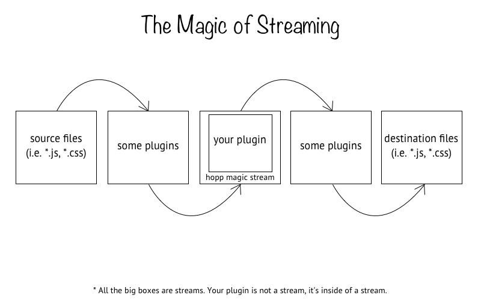

Basics
hopp is a build tool, we know that by now. It works a bit differently than other build tools and it is some of these differences that affect the architecture and development of hopp plugins.
As a plugin maker, your purpose is to write some code that can transform some other code. This transformation process can be whatever you want. In the case of static analysis tools, it could be sometihng like linting code to check for bugs. This would be the conversion of some code that needs to be linted into console output that describes the issues. If you build a plugin for a preprocessor (such as less or sass), your job is to compile the code from its source to a usable output (such as css).
Regardless of how you do it, your primary job is to transform. hopp tries to make this job as easy as possible by stripping away much of the complication. Plugins expose asynchronous functions (i.e. or a synchronous function that returns a Promise). In the background, hopp wraps your function inside of a transformation stream to take advantage of node's streaming capabilities when handling files. What this means for you is that your plugin code will be part of a larger stream which is transforming code. The input to your plugin will be the data entering the stream and consequently the output of your plugin will be the data leaving the stream.
Visually, this looks something like this:

The other way to look at your job is that you are building a bridge in between hopp and a transformation tool. Due to this, try and keep your plugin's API as simple and predictable as possible. If the tool that you are building a plugin for uses a certain pattern of doing things, keep to that pattern rather than designing your own (this is most relevant to when you decide how to take arguments and options as input).